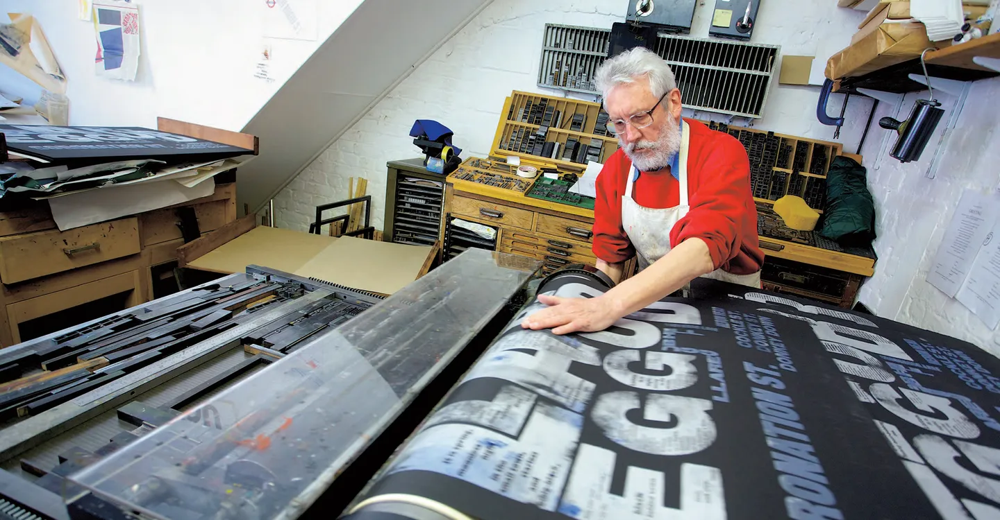

Alan Kitching
Alan Kitching is a renowned British typographer, graphic designer, and master of letterpress printing, celebrated for his innovative approach to typography. With a career spanning over six decades, Kitching has become a key figure in the revival and modernization of traditional letterpress techniques, blending craftsmanship with bold, expressive design. His signature style, characterized by vibrant, textured compositions using wood and metal type, has been influential in both commercial and artistic circles. Through his work, Kitching has helped keep the art of letterpress alive, inspiring new generations of designers.